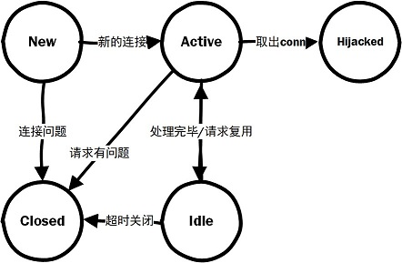

Golong Http 包中，对Http Server 实现的学习和理解。
Http 服务是基于 Tcp 的应用层的实现，也是我们常见的网络协议之一。go 语言提供了较为丰富的http协议的实现包
net/http包。http 是典型的C/S 架构（也是B/S架构），我们先从Server端入手，看看Http Server 是如何实现的。
请求连接的管理
golang 中， 连接的管理采用的是 Reactor 模式。每个请求到达服务器之后，都会分配一个 goroutine 做任务处理。
1 | func (srv *Server) Serve(l net.Listener) error { |
我们在处理 http 请求时，不同请求在不同goroutine中，需要注意并发请求数据共享的问题。
连接的状态
Server 在Accept 后创建连接（conn)，连接可能有多种状态。通过连接的状态转移，可以方便我们了解一个conn 的处理流程。下面是状态的转移图：

当Accept后，构建了新的连接，状态将标记为New。如果可以读取数据，连接将标记为Active（即，活动的Conn）。作为一个活动的Conn，可能在处理完毕后变为Idle状态用于请求复用；也有可能因为请求协议故障，变为Close状态；也有可能被服务调用方直接管理Conn，状态变更为Hijacked 状态。
Hijacked 状态下，Conn 被使用方自行管理，一般用于协议升级的情况。例如：通过http 请求后，协议升级为websocket 请求，或者Rpc 请求等。
连接的处理
做http 的连接处理，重点有几个方面：① 通过连接读取数据，并做协议分析和处理；②对http请求做处理（我们正常需要做的业务处理）；③ 连接的复用和升级。
首先，我们看看整体的处理流程：
1 | // Serve a new connection. |
从代码中可以看出，除了需要做Http 的解析外，还需要不断判断Conn 的状态。当进入Hijack状态后，不再控制Conn；当连接异常后，不再处理请求；当keeplive后，需要复用连接；超时之后，对连接的关闭等。此外，还需要对http 协议做适配处理，例如 对 Except: 100-continue的支持等。
对于每个请求，我们都会有一个 Request 和 Response 对象，分别标识一个请求和响应。从Request 中读取请求Body，将我们的响应写入Response对象中。下面我们来看看Server端是如何构造这两个对象的。
Request 的构造
- 首先是对协议头的解析,获取请求的方法、请求Url，协议等，如果是代理模式，还会做Url的替换。
- 然后会解析Header，在Server 中，Golang 的Header 数据是存储在 map[string][]string 结构中，Key 采用大驼峰和连字符描述。
- 对于Pragma：no-cache 的请求，标识 Cache-control：No-cache
- 对于Connection: close 的请求，不再keeplive
- 构造 Request 传输控制的数据：
- Transfer-Encoding 的修正
- Content-Length 的修正
- chunk 模式下的Trailer修正
- Body 的构造
- PRI header 对Http2的支持。（需要通过HiJack 支持）
Response 的构造
Response 作为服务的响应节点，比较简单，初始化后，创建一个写缓冲区即可：
1 | w = &response{ |
Handler 的处理
Http Server 是为了我们的业务处理服务的。在构造了Request 和 Response 对象后，最终的目的就是为了处理我们的业务逻辑。
在 http Server 中， 构造了 serverHandler 对象完成我们的业务逻辑， serverHandler 中，调用handler.ServerHTTP 方法，我们业务逻辑需要定义一个Handler，handler实现 ServerHTTP 方法即可。
1 |
|
http 包中也通过实现 Handler 接口 提供了一些基础的结构体方便我们使用。例如：
- ServeMux 结构体。这个ServerMux 实现了可以定义路径和Handler映射（简单路由）功能的 Handler，方便我们定义路由。内部还定义了一个默认的DefaultServeMux，我们可以通过如下方法做默认路由的映射(可以从上面方法看到，如果没有定义handler，将使用DefaultServeMux)：
- Handle(pattern string, handler Handler){}
- HandleFunc(pattern string, handler func(ResponseWrite, *Request)){}
- timeoutHandler 结构体。通过 NewTestTimeoutHandler 方法可以构造一个带超时功能的handler。
- redirectHandler 结构体。通过 RedirectHandler 方法可以实现对连接的重定向。
- fileHandler 结构体。通过 FileServer(root FileSystem) 方法可以构造一个fileHandler 结构体，从而实现一个文件服务器。
总结
- 一个 Http 请求，至少会启动两个goroutine。一个groutine用来处理请求，另一个goroutine 用来异步读取body 数据。
- Server 实现中，对协议升级做了充分的考虑。可以通过 Hijack 手段, 将我们的协议从 Http 升级为 WebSocket, RPC，或者其他TCP协议。
几个比较特殊的 Http 协议规则
还有一些http 协议规则的实现，我们在后续的文章做仔细的分析。例如：
- Http Except: 100-continue 协议
- Http CONNECT METHOD, 不仅会用在代理模式的Http Server中，还有可能用在RPC中。
- Chunk 模式， Trailer 设置。